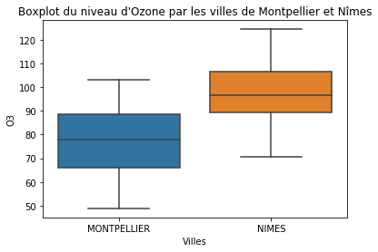
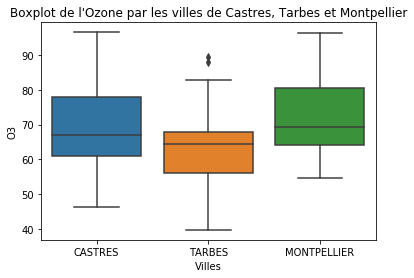

import os
import sys
sys.path.append("./codes")
import numpy as np
import matplotlib.pyplot as plt
plt.rcParams.update({'figure.max_open_warning': 25}) #
%matplotlib notebookExemple d’ANOVA: Mesure de polluants en Occitanie
Auteurs: Arielle Gantelet, Vitus Kirchberger et Samuel Valiquette
import seaborn as sns
import pandas as pd
from pathlib import Path
from statsmodels.formula.api import ols
import statsmodels.api as sm
directory = Path.cwd()
directory = directory.joinpath('prebuiltimages')
def my_saving_display(fig, directory, image_name, imageformat="pdf",
saving=False):
""""Saving with personal function."""
if saving is True:
fig.savefig(directory.joinpath(image_name + '.' + imageformat),
format=imageformat)Importation et traitement des données journalières
from download import download
url = "http://josephsalmon.eu/enseignement/datasets/Mesure_journaliere_Region_Occitanie_Polluants_Principaux.csv"
path_target = "datasets/Mesure_journaliere_Region_Occitanie_Polluants_Principaux.csv"
download(url, path_target, replace=True)Downloading data from http://josephsalmon.eu/enseignement/datasets/Mesure_journaliere_Region_Occitanie_Polluants_Principaux.csv (5.3 MB)
Successfully downloaded file to datasets/Mesure_journaliere_Region_Occitanie_Polluants_Principaux.csvfile_sizes: 100%|██████████████████████████| 5.59M/5.59M [00:03<00:00, 1.75MB/s]'datasets/Mesure_journaliere_Region_Occitanie_Polluants_Principaux.csv'occ = pd.read_csv(path_target)Dans notre objet occ, on obtient l’année et le mois grâce à la date de début de chaque mesure.
occ['date'] = pd.to_datetime(occ['date_debut']).dt.to_period('M')C:\Users\ariel\Anaconda3\lib\site-packages\pandas\core\arrays\datetimes.py:1172: UserWarning: Converting to PeriodArray/Index representation will drop timezone information.
"will drop timezone information.", UserWarning)Regardons les villes disponibles dans le data pour faire notre choix.
occ.nom_com.unique()array(['TOULOUSE', 'GAUDONVILLE', 'BESSIERES', 'TARBES',
'SAINT-LAURENT-DES-ARBRES', 'NIMES', 'LA CALMETTE', 'PERPIGNAN',
'MONTPELLIER', 'MILLAU', 'CASTRES', 'SAINT-GELY-DU-FESC',
'LUNEL-VIEL', 'LOURDES', 'BLAGNAC', 'LATTES', 'AGDE',
'SAINT-ESTEVE', 'ALBI', 'MIRAMONT-DE-COMMINGES', 'PAMIERS',
'PEYRUSSE-VIEILLE', 'MONTGISCARD', 'BELESTA-EN-LAURAGAIS',
'SAINT-GAUDENS', 'CORNEILHAN', 'FRAISSE-SUR-AGOUT', 'SAZE',
'RODEZ', 'CAHORS', 'SAINT-PRIVAT-DES-VIEUX'], dtype=object)Pour le reste de notre analyse, nous allons comparer la mesure d’O3 à Montpellier et Nîmes. Ces données sont enregistrées dans l’objet df.
ville = 'MONTPELLIER', 'NIMES'
df =occ[occ['nom_com'].isin(ville)]
df =df[df['polluant']=='O3']Nos mesures ont été prises entre Octobre 2017 et Octobre 2018. Nous avons sélectionné le mois de juillet 2018 (‘2018-07’) pour notre analyse et on vérifie que pour chaque ville on ait le même nombre de donnée et le même nombre de station. Grâce au code ci-dessous, on conclut qu’on a bien 31 observations pour chaque ville.
df.date.unique()<PeriodArray>
['2017-10', '2017-11', '2017-12', '2018-01', '2018-02', '2018-03', '2018-04',
'2018-05', '2018-06', '2018-07', '2018-09', '2018-08', '2018-10']
Length: 13, dtype: period[M]mont = df[df['nom_com'] == 'MONTPELLIER']mont = mont[mont.date == '2018-07']mont.code_station.unique()array(['FR08016'], dtype=object)mont.count()[0]31nimes = df[df['nom_com'] == 'NIMES']nimes = nimes[nimes.date == '2018-07']nimes.code_station.unique()array(['FR08614'], dtype=object)nimes.count()[0]31df = df[df.date=='2018-07']On modifie notre base de donnée pour avoir seulement le nom des villes et leurs mesures d’O3 en juillet 2018.
df = df[['nom_com', 'valeur_originale']]ANOVA pour l’O3 en juillet 2018 avec 2 villes (\alpha=0.05)
results = ols('valeur_originale ~ nom_com', data=df).fit()aov_table = sm.stats.anova_lm(results, typ=2)
aov_table| sum_sq | df | F | PR(>F) | |
|---|---|---|---|---|
| nom_com | 6808.114546 | 1.0 | 33.859685 | 2.460162e-07 |
| Residual | 12064.107438 | 60.0 | NaN | NaN |
Notre test est significatif à \alpha = 0.05. Cela signifie que les effets individuels ne sont pas nuls. Pour conclure quelle ville est la plus polluée (basé sur l’O3), il suffit de regarder un graphique boxplot.
sns.boxplot(data=df, x='nom_com', y='valeur_originale')
plt.xlabel('Villes')
plt.ylabel('O3')
plt.title("Boxplot du niveau d'Ozone par les villes de Montpellier et Nîmes")
plt.show()
D’après le graphique ci-dessus, il est raisonnable de dire qu’il est mieux de vivre à Montpellier qu’à Nîmes durant le mois de juillet.
ANOVA pour l’O3 en juillet 2018 avec 3 villes (\alpha=0.05)
Cela revient à la même méthode pour avoir notre jeu de données à exploiter et pour appliquer l’anova.
ville = 'MONTPELLIER','TARBES','CASTRES'
df2 =occ[occ['nom_com'].isin(ville)]
df2 =df2[df2['polluant']=='O3']mont2 = df2[df2['nom_com'] == 'MONTPELLIER']
mont2 = mont2[mont2.date == '2018-09']
mont2.code_station.unique()
mont2.count()[0]30tarbes = df2[df2['nom_com'] == 'TARBES']
tarbes = tarbes[tarbes.date == '2018-09']
tarbes.code_station.unique()
tarbes.count()[0]30cast= df2[df2['nom_com'] == 'CASTRES']
cast = cast[cast.date == '2018-09']
cast.code_station.unique()
cast.count()[0]30df2 = df2[df2.date=='2018-09']
df2 = df2[['nom_com', 'valeur_originale']]results2 = ols('valeur_originale ~ nom_com', data=df2).fit()aov_table2 = sm.stats.anova_lm(results2, typ=2)
aov_table2| sum_sq | df | F | PR(>F) | |
|---|---|---|---|---|
| nom_com | 1379.947763 | 2.0 | 4.335629 | 0.016036 |
| Residual | 13845.218292 | 87.0 | NaN | NaN |
On constate que notre test est significatif à \alpha = 0.05.
sns.boxplot(data=df2, x='nom_com', y='valeur_originale')
plt.xlabel('Villes')
plt.ylabel('O3')
plt.title("Boxplot de l'Ozone par les villes de Castres, Tarbes et Montpellier")
plt.show()